El IMMCA en el congreso de la Neurotoxicity Society
En Montevideo presentamos nuestros trabajos junto a unos 200 especialistas de todo el mundo.
Ver en InstagramEstudiamos cómo se originan las enfermedades neurodegenerativas y desarrollamos nuevas herramientas para detectarlas y tratarlas. Lo hacemos junto a equipos de salud, grupos de investigación y empresas de base tecnológica.
Instituto de Investigaciones en Medicina Molecular y Celular Aplicada · CONICET, UNT y SIPROSA
Investigación · Docencia · Transferencia


En Montevideo presentamos nuestros trabajos junto a unos 200 especialistas de todo el mundo.
Ver en Instagram
En las XXVII Jornadas Científicas Augusto Palavecino, estudiantes y egresados conocieron las investigaciones de nuestros laboratorios.
Ver en Instagram
Álvaro Luna Mercado participó del congreso de la Red Iberoamericana de Aptámeros (REDIBA) y de un curso internacional del Centro Argentino-Brasileño de Biotecnología.
Ver en Instagram
Valentina Budeguer, doctoranda del IMMCA, participa del curso internacional «Small Brains, Big Ideas», en Las Cruces.
Ver en Instagram
El CONICET NOA Sur lanzó su plataforma de servicios del noroeste argentino. El IMMCA ofrece allí cinco servicios tecnológicos.
Ver en PLASENOA
La Facultad de Bioquímica, Química y Farmacia de la UNT la distinguió por su trabajo, seleccionado para las Jornadas de Jóvenes Investigadores de AUGM en Brasil.
Ver en Instagram
Fue seleccionada para la primera Escuela de Neurociencias y presentó su trabajo en el congreso FALAN, junto a Valentina Budeguer.
Ver en Instagram
Contamos el camino que va de las primeras preguntas sobre agregación de proteínas a nuevas tecnologías para enfermedades neurodegenerativas.
Ver en Instagram
Fue seleccionado como Ambassador de «Voices of AD/PD», uno de los principales congresos internacionales sobre Alzheimer y Parkinson.
Ver en Instagram
Recibimos a estudiantes en stands y pósters, y nuestra directora dio una charla en el Instituto Técnico de Aguilares.
Ver en Instagram
Rediseñamos el puente que une las dos partes de Pegasus y obtuvimos tres moléculas nuevas que conservan su capacidad de interferir con la agregación de alfa-sinucleína.
Ver en Instagram
Una iniciativa del IMMCA junto con la UNT, el CONICET, el Ministerio de Salud Pública, la Municipalidad y el Hospital Padilla.
Leer en CONICET NOA SurLa Resolución 1204/SPS/25 aprueba el convenio con SkyBio LLC y reconoce al IMMCA como lugar del desarrollo.
Leer en el MinisterioLa startup nacida en el IMMCA ganó el concurso de planes de negocio del Instituto Balseiro, entre 34 proyectos de todo el país.
Pegasus, diseñada en el IMMCA junto a la UBA y SkyBio, mostró en estudios preclínicos mejorar los síntomas y proteger a las neuronas.
Leer en CONICETQué sabemos hoy de la enfermedad y en qué trabaja el instituto para diagnosticarla antes.
Leer en immca.conicet.gov.ar
Reconocimiento al IMMCA por su aporte a la ciencia y a la innovación, y por su compromiso con la salud pública durante la pandemia de COVID-19.
Nuevos métodos diagnósticos para enfermedades neurodegenerativas.
Leer en immca.conicet.gov.arUn test serológico desarrollado en Tucumán que tuvo grandes resultados durante la pandemia.
Leer en CONICETUn trabajo con participación del IMMCA confirmó la duración de la respuesta tras la vacunación.
Leer en CONICETLa directora presentó el caso del IMMCA: triple dependencia y articulación con el sector privado.
Leer en immca.conicet.gov.arFibras amiloides para eliminar uretanos en vinos de exportación.
Leer en immca.conicet.gov.arLa cooperación con equipos franceses en Parkinson y Alzheimer.
Leer en immca.conicet.gov.arCiencia básica, clínica y vinculación con empresas, con el respaldo de CONICET, la UNT y el SIPROSA.
Datos al 17 de noviembre de 2026. Los artículos son los publicados desde la creación del instituto; la biblioteca incluye además trabajos anteriores del equipo.

El instituto nació de un grupo de biofísica de proteínas. Cuando nuestras preguntas se aproximaron a la enfermedad de Parkinson, conformamos un consorcio con el equipo de la Dra. Rita Raisman-Vozari en el Instituto del Cerebro de París, una colaboración en la que cada grupo incorporó la experiencia del otro. Esa alianza, y el financiamiento que trajo consigo, aportaron la masa crítica necesaria para cubrir una vacancia estratégica en el norte argentino: la de un instituto de investigación biomédica.
Rosana Chehín hace su estancia posdoctoral en la Unidad de Biofísica de la Universidad del País Vasco (UPV/CSIC) y publica siete trabajos sobre la estructura de las proteínas. Ese conocimiento es el que años después se aplicará a la neurodegeneración.
De vuelta en Tucumán, ingresa a la carrera de investigación del CONICET en el INSIBIO, el Instituto Superior de Investigaciones Biológicas (CONICET-UNT), y organiza allí un grupo de biofísica de proteínas. Se estudia la agregación amiloide desde la física, todavía sin cultivos celulares ni modelos in vivo.

Empieza la colaboración con el grupo de neurobiología de Rita Raisman-Vozari, en el Instituto del Cerebro (ICM) de París. Se forma un consorcio en el que cada grupo aprende del otro: el conocimiento biofísico pasa a aplicarse a las bases moleculares de la neurodegeneración, y la neurobiología entra al laboratorio de Tucumán.

Con becas Houssay, programas BEC.AR, ECOS-Sud, Egide y el convenio UNT-París, los becarios del grupo hacen estancias en el ICM y se reciben investigadores como profesores invitados. Los subsidios nacionales e internacionales permiten equipar el laboratorio y alcanzar la masa crítica necesaria para pedir un instituto propio.
En noviembre se presenta la solicitud de creación, con el modelo del Instituto del Cerebro de París como referencia y un proyecto edilicio de 480 m².
Scientific Reports publica cómo la doxiciclina remodela los oligómeros tóxicos de alfa-sinucleína. El trabajo recorre los medios del país.
El 23 de mayo, CONICET, UNT y el Ministerio de Salud Pública de Tucumán firman el convenio marco. Ese mismo día se firma un memorándum con SkyBio.
CONICET, UNT, SIPROSA, FCEN-UBA y SkyBio firman un acuerdo para desarrollar un nuevo transportador de dopamina al sistema nervioso central.
A pedido del sistema de salud del que formamos parte, el instituto pone a punto una tecnología para medir la respuesta inmune después de la infección y después de la vacuna. Así nace InmunoCoviTuc.
Convenio Aristaeus: un dispositivo de diagnóstico basado en derivados de tetraciclinas que se unen a un biomarcador de la enfermedad.
La patente del candidato a fármaco para Parkinson se aprueba en Estados Unidos y en la Unión Europea, y sigue en trámite en otros seis países. En 2025 se aprueba su licencia a SkyBio LLC.
Pegasus completa su evaluación preclínica, en modelos celulares y animales, y queda listo el paquete pre-IND para la FDA. Todavía no se probó en personas.
Prevista para febrero: el paso previo a pedir autorización para los primeros estudios en personas.
El Institut du Cerveau, en el Hospital Pitié-Salpêtrière, es uno de los mayores centros de investigación en neurociencias de Europa. Durante años, los becarios e investigadores del grupo hicieron estancias en el laboratorio de la Dra. Rita Raisman-Vozari. Volvieron con las técnicas que después montaron en Tucumán: purificación de proteínas, microscopía de fluorescencia y modelos celulares de neurodegeneración.
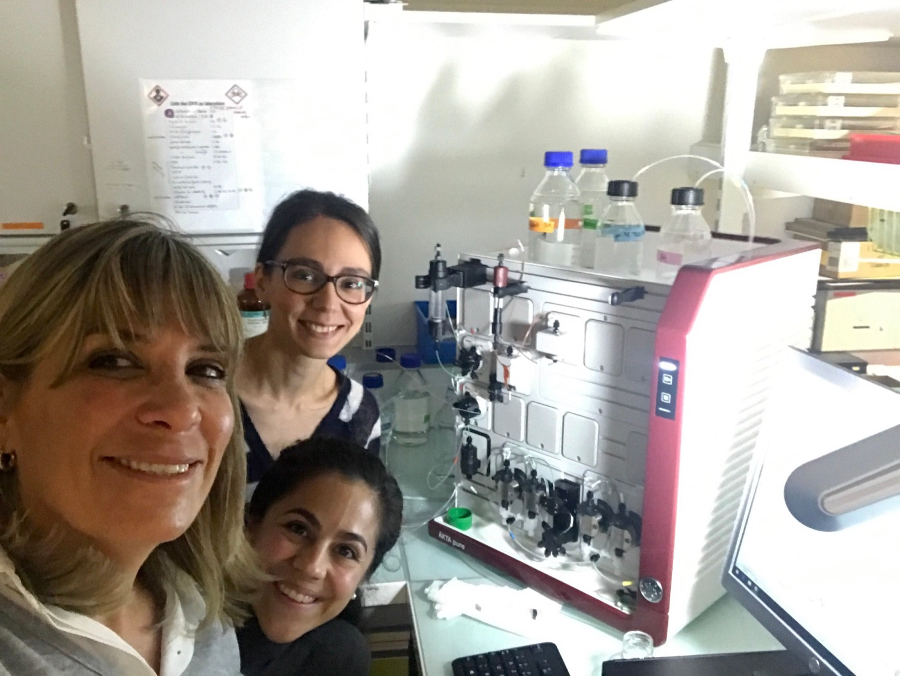

El IMMCA nació en Tucumán para acercar la investigación biomédica a las necesidades del sistema público de salud. Las preguntas que surgen en la atención de pacientes ayudan a orientar el trabajo en el laboratorio. A su vez, los hallazgos del laboratorio pueden convertirse en nuevas herramientas de diagnóstico y estrategias terapéuticas. Ese ida y vuelta es la base de la medicina traslacional.
La Universidad Nacional de Tucumán, el CONICET y el Sistema Provincial de Salud de Tucumán (SIPROSA) impulsaron el instituto a partir de los equipos y proyectos de investigación biomédica que ya trabajaban en la provincia. El SIPROSA aportó el predio de Dorrego 1080, donde se construyó la primera etapa de la sede, con espacios para cultivo celular, microscopía confocal y producción de proteínas.
Desde entonces, el IMMCA amplió sus instalaciones e incorporó equipamiento para estudiar los mecanismos de las enfermedades, desarrollar nuevas tecnologías y evaluar su potencial aplicación en salud.
El modelo: el Instituto del Cerebro (ICM) del Hospital Pitié-Salpêtrière, París
UNT y CONICET aportan los investigadores, la formación de becarios y la pregunta de fondo.
El SIPROSA aporta el edificio, los servicios y algo más valioso: los problemas reales de los pacientes y los estudios clínicos.
Socios privados como SkyBio financian el desarrollo y llevan los resultados al mercado: nuevos fármacos y métodos diagnósticos.
Medicina traslacional ciencia, salud y empresa trabajando juntas
Laboratorios propios en Dorrego 1080, San Miguel de Tucumán: once salas y 120 equipos bajo un plan de mantenimiento y calibración documentado, equipo por equipo, con responsable y frecuencia asignados. Equipamiento y herramientas de análisis cuantitativo para investigación biomédica.
Imágenes de alta resolución de células, tejidos y organismos modelo. Pero el microscopio es la mitad del trabajo: la otra mitad es convertir esas imágenes en números. Cuantificamos con flujos de análisis reproducibles, asistidos por inteligencia artificial, que delimitan cada célula y cada núcleo, detectan los agregados que hay adentro y miden intensidades en todos los canales.
Todo corre en Python, con el código versionado. Y con una regla que no negociamos: la unidad estadística nunca es la célula. Las células de un mismo campo comparten pocillo, tinción y óptica, así que no son réplicas independientes. Definimos la unidad experimental según el diseño de cada estudio: agregamos célula a campo y campo a réplica biológica, y recién ahí comparamos.

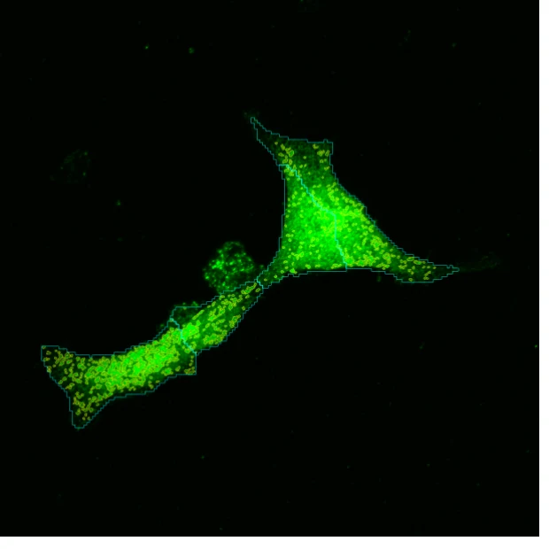
# La unidad estadística nunca es la célula:
# las de un mismo campo no son independientes.
fields, reps = aggregate_levels(
df_cells, metric,
condition_col="condicion",
field_col="campo",
replicate_col="replica")
res = compare_all_to_control(
fields, metric,
control="Ctrl",
test="mannwhitney",
correction="bh")Sala con esclusa y presión positiva con filtro HEPA, donde se mantienen y tratan las líneas celulares con las que trabajamos: SH-SY5Y, HEK y BV2, entre otras. Es el punto de partida de casi todos los ensayos del instituto, desde la evaluación de compuestos hasta los modelos de agregación de proteínas.
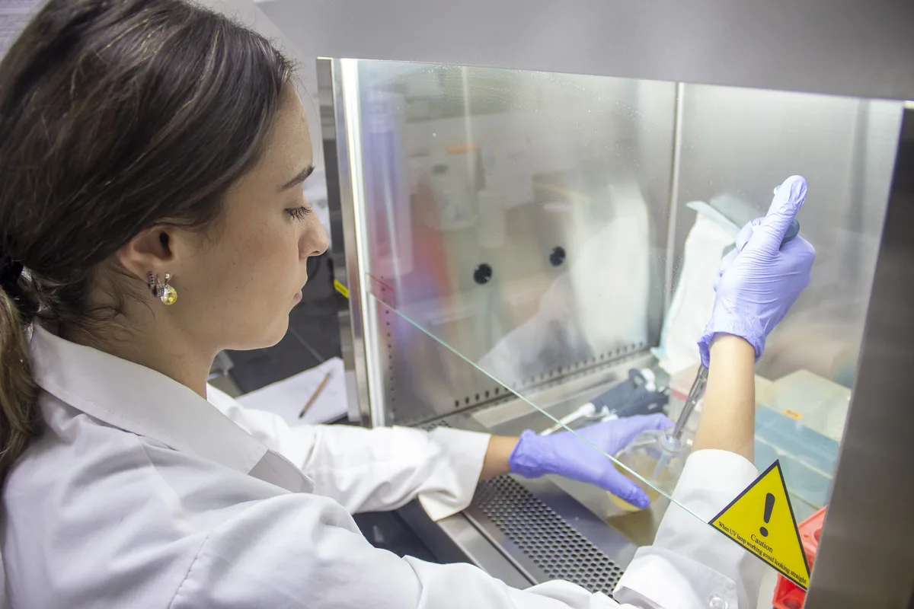
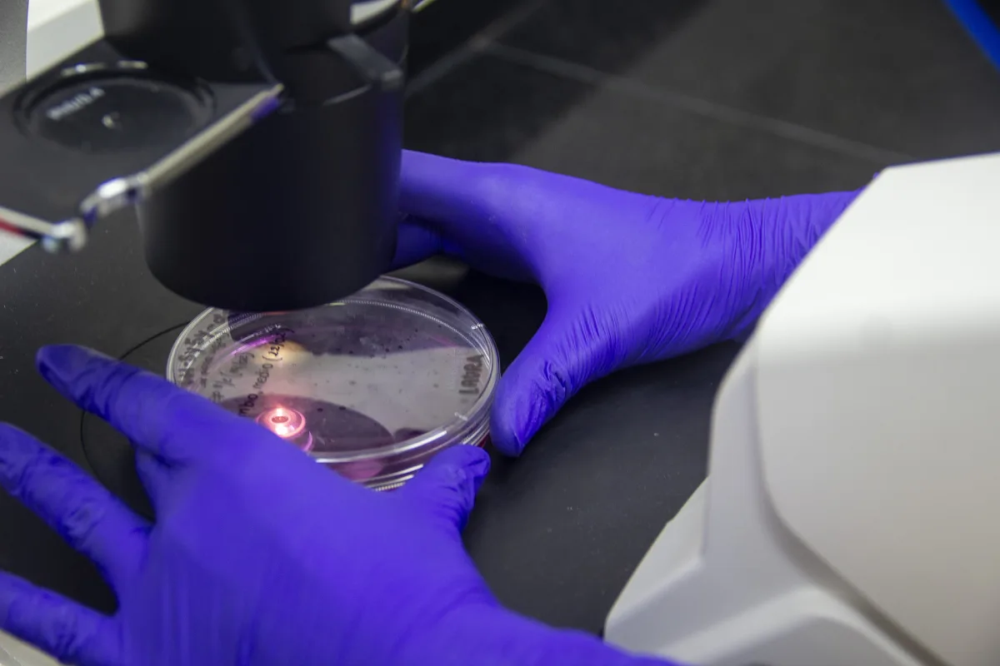
Expresión, ruptura celular y purificación de proteínas recombinantes como alfa-sinucleína y tau, y detección por electroforesis y Western blot. Producimos el material que usan nuestros propios ensayos y también otros laboratorios del país.
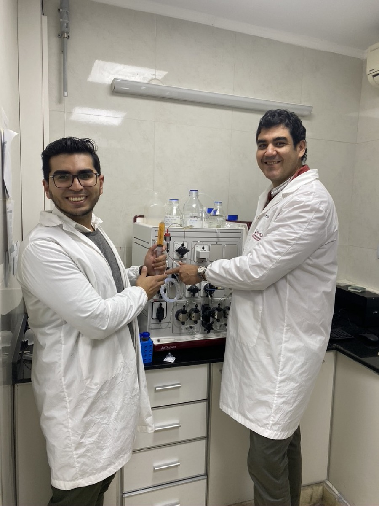

Acá se sigue en tiempo real cómo una proteína se pliega, se agrega o deja de hacerlo frente a un compuesto. Medimos cinéticas de agregación, tamaño y estabilidad de partículas en suspensión, y ensayos ópticos en microplaca, incluidos los inmunoensayos.
Sala dedicada a los ensayos in vivo del instituto, con su propia cabina de seguridad biológica. Es donde se trabaja con C. elegans, el modelo que usamos para ver si un compuesto protege neuronas en un organismo entero y no solo en una placa.
Expresión en bacterias, cultivos con agitación controlada y el trabajo de biología molecular que sostiene a la producción de proteínas: clonado, amplificación y control de los constructos.
Lo que sostiene a todo lo demás: la conservación de las muestras, la preparación del material y el agua con la que se hace cada solución. Sin esto, ninguno de los otros equipos sirve de nada.
Investigadores, empresas y organismos pueden usar este equipamiento a través de nuestros servicios tecnológicos.

Directora del IMMCA
Investigadora Principal del CONICET y Profesora Titular de Química Biológica en la Universidad Nacional de Tucumán. Bioquímica con el primer promedio de su promoción y Doctora en Bioquímica con calificación sobresaliente.
Se formó en espectroscopía de proteínas en la Universidad del País Vasco y fue profesora invitada en la Universidad Paris-Est. Fue Secretaria de Ciencia, Arte e Innovación Tecnológica de la UNT y hoy integra la Academia de Ciencias Médicas de Tucumán y el comité editorial de Frontiers in Aging Neuroscience.
Buscamos diagnosticar antes y tratar mejor las enfermedades neurodegenerativas.
Cada línea une ciencia básica con resultados que salen del laboratorio: patentes, kits, licencias y servicios. Las marcadas con VT tienen vinculación tecnológica con empresas o instituciones.
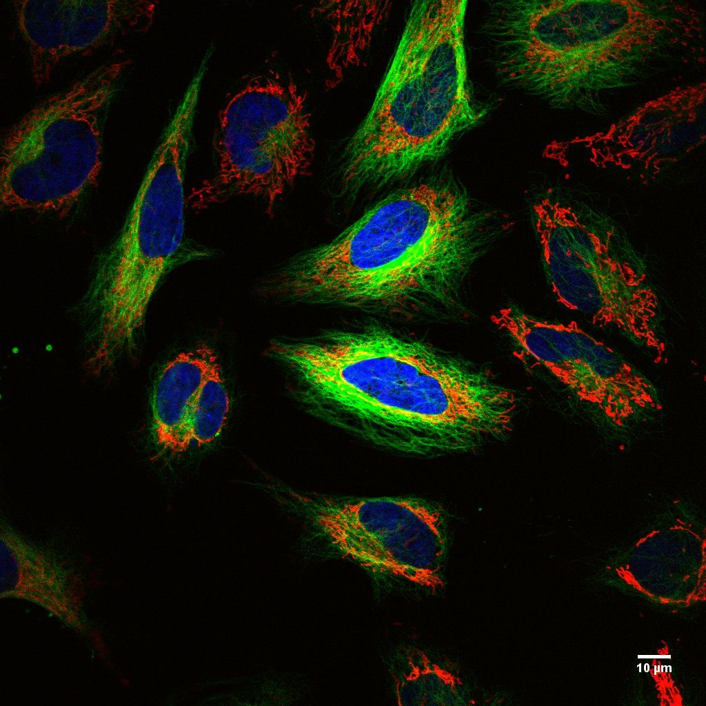
01Estudiamos cómo la alfa-sinucleína, la tau y otras proteínas forman agregados tóxicos, con modelos experimentales propios, y la genética del Parkinson en Latinoamérica. De acá salen las preguntas que alimentan a las demás líneas.
En condiciones normales, la alfa-sinucleína es una proteína soluble y sin una estructura definida. En el Parkinson adopta una conformación rica en láminas beta, se ensambla en oligómeros y forma fibras amiloides que actúan como semillas y propagan el mal plegamiento. Esas fibras son el componente principal de los cuerpos de Lewy.
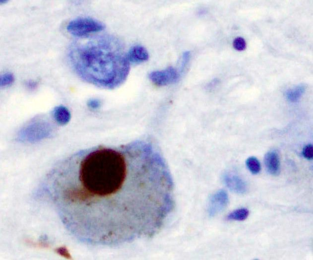
02Rediseñamos las tetraciclinas, antibióticos conocidos, para que protejan a las neuronas sin actuar como antibióticos. Así nació Pegasus, un conjugado de dopamina y tetraciclina que interfiere con la agregación de la alfa-sinucleína y a la vez activa los receptores de dopamina.
Detrás de Pegasus hay una familia entera de moléculas construidas sobre el mismo andamiaje. La tecnología está licenciada y hoy se encuentra en desarrollo preclínico avanzado, a cargo de la empresa licenciataria.
 03
03
Cuando aparecen los síntomas motores del Parkinson ya se perdió buena parte de las neuronas dopaminérgicas. Por eso buscamos señales más tempranas: un biosensor, nuevos radiotrazadores para PET y la técnica RT-QuIC con insumos de producción local, con el objetivo de llevarla a muestras de sangre.
 El proyecto más avanzado de esta línea
El proyecto más avanzado de esta línea
Un biomarcador es una señal medible en el cuerpo que indica que una enfermedad está presente o avanzando. La mayoría de los biomarcadores neurológicos que se usan hoy, como NfL, GFAP o pTau, miden cuánta proteína hay, y pueden subir también por otras causas.
La RT-QuIC, un ensayo de amplificación de semillas (SAA), mide otra cosa: si en la muestra hay alfa-sinucleína mal plegada capaz de transmitir su forma a otras proteínas, la marca bioquímica de la enfermedad de Parkinson. Puede detectar un agregado entre mil millones de moléculas normales.
Miden cantidad o daño. Son indirectos.
Detecta la forma de la proteína que propaga la enfermedad.
Se descubre que los cuerpos de Lewy, la lesión típica del Parkinson, están formados por alfa-sinucleína.
Primera detección de alfa-sinucleína agregada en líquido cefalorraquídeo con RT-QuIC.
Se logra detectarla en sangre, un paso clave para un análisis más simple.
La FDA emite una carta de apoyo al ensayo de alfa-sinucleína como biomarcador para investigación.
En el marco de un proyecto de la Organización de los Estados Americanos (OEA), avanzamos en la implementación de RT-QuIC para detectar agregados de alfa-sinucleína con capacidad de siembra, asociados a enfermedades neurodegenerativas.
El IMMCA produce alfa-sinucleína humana recombinante, que se utiliza como sustrato en el ensayo RT-QuIC. La capacidad de producción local es de 100 mg mensuales.
Pusimos a punto el ensayo con insumos de producción local. Actualmente avanzamos en su validación en muestras de líquido cefalorraquídeo (LCR) y en la implementación de procedimientos de gestión de calidad.
Estudiamos la aplicación de RT-QuIC a fracciones de vesículas extracelulares aisladas de plasma y seleccionadas por su posible origen neuronal. El objetivo es determinar si estas fracciones permiten detectar agregados de alfa-sinucleína con capacidad de siembra en muestras de sangre.
04
Producimos alfa-sinucleína y tau en monómeros, fibras y fibras fluorescentes, que otros laboratorios usan como material de referencia en sus propios ensayos. Es una capacidad instalada poco frecuente en el país.
Con las mismas fibras amiloides trabajamos en otra dirección: usarlas como soporte para inmovilizar enzimas de interés industrial, con aplicaciones en biodiésel, vinos y aceite de oliva.
Además, ofrecemos servicios tecnológicos con nuestro equipamiento y acompañamos startups como BrinDx.
Hacé clic en un nombre para ver su trayectoria. Desde cada ficha se llega a la oficial del CONICET, con los proyectos y la producción completa.


Dirige el IMMCA y el grupo de neurobiofísica donde nacieron Pegasus y Aristaeus. Su trabajo gira alrededor de cómo las proteínas se pliegan, se agregan y dañan a la neurona.

Biofísico y bioinformático. Combina la simulación computacional con la espectroscopía para entender qué forma toman las proteínas y por qué esa forma se pierde.
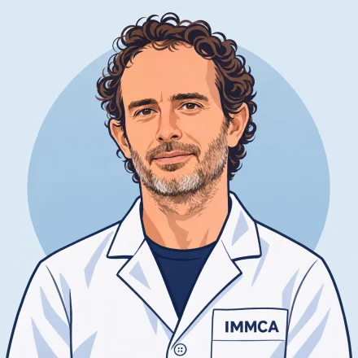
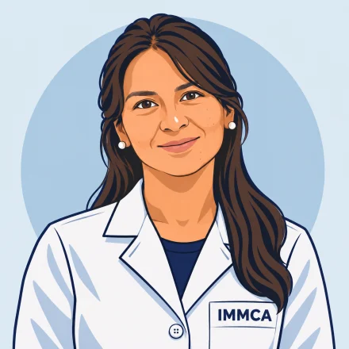

Trabaja en reposicionamiento de fármacos: buscar, entre medicamentos que ya se usan y son seguros, cuáles frenan la agregación de proteínas en el cerebro.

Estudia los lisosomas y los autofagosomas: el sistema con el que la célula degrada lo que ya no sirve, y que deja de funcionar en las enfermedades neurodegenerativas.

Fuente: ficha oficial del IMMCA en CONICET (BICyT), más dos doctorandos que están terminando su tesis en el instituto. A esto se suman docentes de la UNT, tesistas y estudiantes de grado.
La vida en el IMMCA también incluye encuentros, celebraciones y actividades que compartimos fuera del laboratorio.

El día de partido, la sala de reuniones se convierte en tribuna.
Si te interesa hacer tu tesina, tu doctorado o un posdoctorado en neurociencias, biofísica de proteínas o biotecnología aplicada a la salud, queremos conocerte.
Para estudiantes avanzados de Bioquímica, Biotecnología y carreras afines. Podés presentarte a becas de estímulo CIN o CIUNT.
Con becas doctorales del CONICET, incluidas las de temas estratégicos, y el doctorado de la UNT.
Con becas posdoctorales del CONICET, para sumarte a una línea en marcha o proponer una propia.
¿Te sumás? Contanos qué te interesa y te orientamos.
EscribinosTres décadas de trabajos del grupo, incluidos los anteriores a la creación del instituto en 2018. Por eso son más que los 30 artículos que contamos en las cifras del IMMCA. Los de acceso abierto se leen acá mismo; el resto, en la revista.
7investigadores
Somos un equipo chico. Esto es lo que producimos desde 2018.
Además, tenemos presencia permanente en congresos nacionales e internacionales, con comunicaciones y conferencias invitadas.
Promedios sobre 7 investigadores y nueve años de trabajo, de 2018 a 2026 inclusive. Ficha del instituto en CONICET
Coautores en 13 países
Dos familias de patentes internacionales. Son titulares el CONICET, la UNT, la UBA y el SIPROSA; la licenciataria es SkyBio LLC.
Diseñado y evaluado en el IMMCA tras más de una década de estudio de las bases moleculares de la enfermedad, y sintetizado en la UBA.
Licenciada a SkyBio LLC · etapa preclínicaDerivados de tetraciclinas que reconocen formas agregadas de alfa-sinucleína, para su incorporación en plataformas de biosensado. Fases nacionales presentadas en ocho países. Licenciada a SkyBio LLC.
Acción oficial favorable en EE. UU., noviembre de 2026
Pegasus (DAD9) es un candidato a fármaco para la enfermedad de Parkinson diseñado en el IMMCA. Todavía no llegó a pacientes: completó la etapa preclínica y hoy se prepara para pedir autorización a la FDA para los primeros estudios en personas.
Estado al 17 de noviembre de 2026
SkyBio LLC completó el escalado de la síntesis de Pegasus con certificación GMP. La familia de patentes cubre ocho jurisdicciones: concedida en Estados Unidos y en la Unión Europea, y en trámite en otras seis. La tecnología está licenciada en exclusiva a SkyBio LLC.
SkyBio LLC completó el programa preclínico a través de la CRO KeifeRX. El programa incluyó estudios de toxicidad, farmacología de seguridad, farmacocinética, posibles interacciones y evaluación de la formulación.

SkyBio LLC completó la documentación pre-IND. La reunión con la FDA está prevista para febrero de 2027, para discutir el plan de los primeros estudios en personas.

Una vez cumplidos los requisitos regulatorios, el primer ensayo clínico se centrará en evaluar la seguridad y la tolerabilidad de Pegasus.
Más de una década de investigación en el IMMCA, de una observación sobre un antibiótico viejo a un candidato a fármaco licenciado. Cada hito tiene su publicación.
En el Parkinson, la alfa-sinucleína forma agregados tóxicos y se pierden las neuronas que producen dopamina. La dopamina, a su vez, no llega bien al cerebro cuando se administra como fármaco, y al oxidarse genera derivados que dañan a la neurona.
Encontramos que la doxiciclina, un antibiótico de uso corriente, remodela los agregados de alfa-sinucleína y los transforma en especies que no dañan a la neurona. Era la primera pista: una molécula vieja, conocida y segura, hacía algo que nadie le había pedido.
Comparamos tetraciclinas entre sí: la minociclina no frena la agregación, pero la doxiciclina y la inciclinida sí. La neuroprotección no dependía de la actividad antibiótica, sino de una parte precisa de la molécula. Eso abría la puerta a separar una cosa de la otra.
Con química computacional y análisis de relación estructura-actividad identificamos qué parte de la tetraciclina reconoce la estructura de los agregados: el grupo ceto-enólico. Y vimos que al quitar la dimetilamina se pierde la actividad antibiótica pero se conserva la anti-agregante. Con eso ya podíamos diseñar tetraciclinas que no fueran antibióticos.
Un derivado de la demeclociclina, sin actividad antibiótica, resultó neuroprotector en modelos experimentales. Dejaba de ser una observación y pasaba a ser un compuesto líder, el primero de la serie.
Si la tetraciclina entra al cerebro y se pega a los agregados, podía servir de vehículo. Unimos una molécula de dopamina a la tetraciclina y bloqueamos su amina primaria convirtiéndola en amida, para que no pueda ciclarse en aminocromo ni en melanina, los derivados que vuelven tóxica a la dopamina libre. La síntesis se hizo junto al grupo del Dr. Oscar Varela, en la UBA.
El conjugado funciona en las dos puntas: interfiere con la agregación de la alfa-sinucleína y con su propagación entre células, y al mismo tiempo activa los receptores de dopamina. Es lo que hace a Pegasus distinto de un tratamiento solo sintomático.
A partir del mismo andamiaje llegaron otras moléculas: DDOX, que impide que las fibras preformadas de alfa-sinucleína entren a la célula, y una serie de conjugados con azufre que amplía el repertorio. La línea dejó de ser una molécula para volverse una plataforma.
Terán et al., Scientific Reports 15 · Pernicone et al., ChemMedChem 2026
Familia de patentes en ocho jurisdicciones: concedida en Estados Unidos y en la Unión Europea, y en trámite en otras seis. Son titulares el CONICET, la UNT, la UBA y el SIPROSA. La licencia exclusiva a SkyBio LLC fue aprobada por la Resolución 1204/SPS/25 del Ministerio de Salud Pública.
SkyBio LLC completó el escalado con certificación GMP y el programa preclínico a través de la CRO KeifeRX, y tiene lista la documentación pre-IND. La reunión con la FDA está prevista para febrero de 2027. El próximo desafío es comprobar si todo esto se traduce en un beneficio para los pacientes.
Una empresa de base tecnológica nacida en el instituto, para detectar las enfermedades neurodegenerativas antes de que aparezcan los síntomas.
Cuando aparece el primer síntoma, la enfermedad lleva años avanzando en silencio. BrinDx trabaja sobre esa ventana previa, con dos desarrollos en paralelo: radiotrazadores para ver por imágenes los agregados de proteína en etapas tempranas, y la detección de marcadores en vesículas extracelulares aisladas de sangre, una vía menos invasiva que la punción lumbar.
Su equipo reúne a estudiantes y graduados de la UNT con investigadores del CONICET y del SIPROSA. Ofrece además proteínas recombinantes y kits de ensayo para investigación, y junto con el instituto busca adaptar la técnica RT-QuIC con insumos locales para que funcione en sangre.
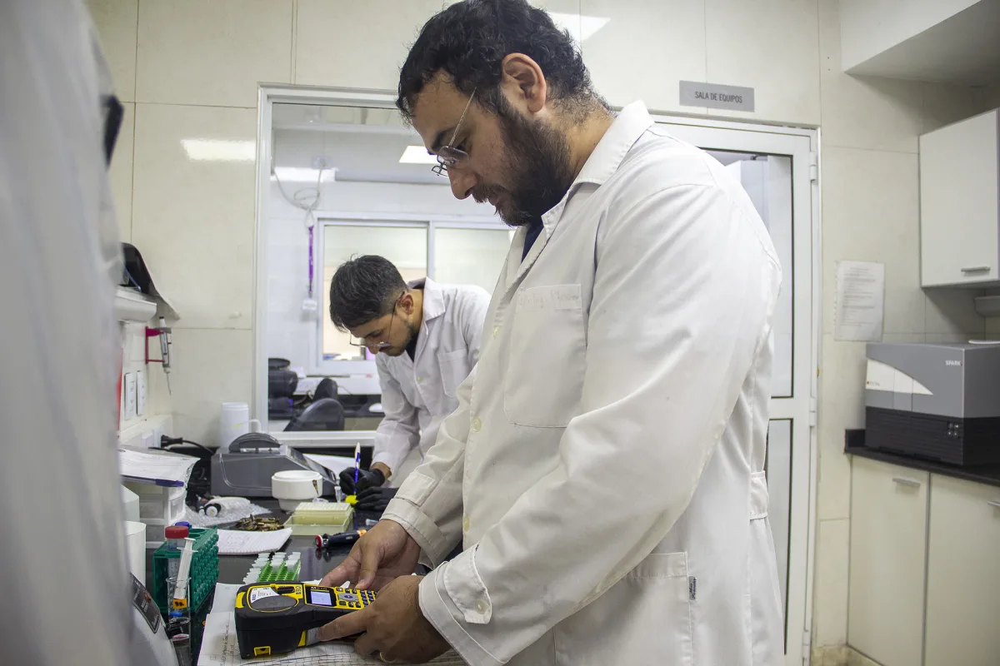
Servicios Tecnológicos de Alto Nivel (STAN) del CONICET para empresas, organismos públicos e instituciones de I+D. Cinco de ellos están en PLASENOA, la plataforma de servicios del CONICET NOA Sur.
Nombre del servicioEvaluación de potenciales moduladores de la agregación de proteínas asociadas a enfermedades neurodegenerativas
Diseñamos ensayos in vitro para caracterizar candidatos y comparar formulaciones. Según el objetivo del proyecto, evaluamos su actividad antioxidante y antiinflamatoria, su efecto sobre el estrés lisosomal y sobre la agregación de alfa-sinucleína y tau, así como sobre la propagación intercelular de agregados.
Aplicaciones en investigación diagnósticaDetección y amplificación de proteínas agregadas con capacidad de propagar la patología entre células, en muestras biológicas. Se aplica en investigación, en la selección de compuestos y en la evaluación de estrategias diagnósticas, no como análisis clínico.
Para quiénEmpresas farmacéuticas, biotecnológicas y de ingredientes, y grupos de investigación que quieran caracterizar un candidato, comparar formulaciones o seleccionar cuáles llevar a la siguiente etapa.
Consultar por este servicio Ficha técnicaNombre del servicioEvaluación de efectos biológicos en cultivos celulares
Citotoxicidad, actividad metabólica, daño de membrana, estrés oxidativo y respuesta inflamatoria. Comparamos concentraciones y formulaciones para elegir candidatos antes de pasar a modelos más complejos.
Para quiénEmpresas, instituciones y grupos de investigación que necesiten evaluar formulaciones, productos biotecnológicos, extractos, compuestos, principios activos o materiales.
Consultar por este servicio Ficha técnicaNombre del servicioObtención y análisis de imágenes por microscopía confocal
Obtenemos imágenes de fluorescencia de alta resolución con un Zeiss LSM 800, con láseres de 405, 488, 561 y 640 nm. Localizamos marcadores, analizamos su colocalización y la morfología de la muestra, y generamos reconstrucciones en tres dimensiones. Trabajamos con células, tejidos y materiales compatibles con fluorescencia.
Contamos además con software especializado para el análisis y la cuantificación de las imágenes, de modo que el servicio puede entregar tanto las imágenes como los datos medidos sobre ellas.
Para quiénEmpresas, instituciones y grupos de investigación que necesiten visualizar estructuras, moléculas o procesos en células, tejidos u otras muestras compatibles con fluorescencia.
Consultar por este servicio Ficha técnicaNombre del servicioAnálisis de tamaño, distribución y estabilidad de partículas en suspensión
Medimos el tamaño y la distribución de partículas en suspensión mediante dispersión dinámica de luz (DLS), desde la escala nanométrica hasta la micrométrica. También medimos el potencial zeta, con el HORIBA SZ-100V2.
Podés comparar formulaciones y lotes, o seguir los cambios en el tamaño y la distribución de las partículas durante el almacenamiento para evaluar la estabilidad de la dispersión.
Para quiénSectores farmacéutico, biotecnológico, alimentario, agroindustrial, ambiental, minero, veterinario y de materiales.
Consultar por este servicio Ficha técnicaNombre del servicioAnálisis de muestras por absorbancia, fluorescencia y luminiscencia
Leemos tus muestras en microplaca con un lector multimodo TECAN Spark 1000, en los tres modos de detección: absorbancia, fluorescencia y luminiscencia. Hacemos ensayos colorimétricos, fluorométricos y luminométricos, midiendo en un punto o siguiendo el cambio a lo largo del tiempo.
Podés medir cinéticas, actividad enzimática y curvas de concentración y respuesta, y comparar muchas muestras, concentraciones o condiciones en una misma corrida.
Para quiénEmpresas, emprendimientos, instituciones y grupos de investigación que necesiten medir, detectar o comparar sustancias o procesos.
Consultar por este servicio Ficha técnicaNombre del servicioAnálisis estadístico de datos
Procesamos, analizamos e interpretamos tus datos para ayudarte a comparar grupos o tratamientos y comunicar los resultados en informes, publicaciones o presentaciones.
Para quiénGrupos de investigación y empresas con datos experimentales de proyectos de I+D.
Consultar por este servicioNombre del servicioDeterminación de anticuerpos anti-SARS-CoV-2 por ELISA
InmunoCoviTuc nació durante la pandemia en el IMMCA. El ensayo mide en suero los anticuerpos dirigidos contra el dominio RBD de la proteína Spike del SARS-CoV-2. Fue transferido al Laboratorio de Salud Pública del SIPROSA y se utilizó en estudios de respuesta a la vacunación. Ver la nota del instituto.
Para quiénInstituciones de salud y grupos de investigación que necesiten medir la respuesta de anticuerpos después de la vacunación o de una infección por SARS-CoV-2.
Consultar por este servicioNos contás qué muestra tenés y qué querés averiguar.
Revisamos si la muestra es compatible con la técnica y si el ensayo puede responder tu pregunta.
Acordamos condiciones, controles, cantidad de muestras, plazos y costo.
Medimos con los controles acordados y procesamos los datos.
Entregamos resultados e interpretación dentro del alcance establecido.
También firmamos convenios de I+D con empresas, como los de SkyBio y BACON SAIC. Ver en PLASENOA · Ver en CONICET
Contanos qué necesitás y te respondemos con disponibilidad, condiciones y presupuesto.
Responsable de servicios
Sabrina Sequeira
O escribile directamente…
Investigar con muestras de pacientes exige permisos y sistemas de gestión que no todo instituto tiene. Estos son los nuestros, con el estado en que está cada uno.
El laboratorio está habilitado por la Dirección General de Fiscalización Sanitaria del Ministerio de Salud Pública de Tucumán, por Resolución N.º 012/DFSS del 9 de enero de 2026, por un plazo de cuatro años, hasta el 8 de enero de 2030.
La dirección técnica está a cargo de la Dra. Rosana Chehín y la codirección técnica del Dr. César Luis Ávila. Esa habilitación es la que nos permite trabajar con muestras humanas y de origen animal, y hacer el procesamiento inicial de muestras para ensayos clínicos y para el desarrollo y la puesta a punto de tecnología biomédica. Es una posición poco frecuente para un instituto de investigación, y es la que hace posible, por ejemplo, el trabajo con líquido cefalorraquídeo y sangre en el proyecto de RT-QuIC.
Ver la Resolución 012/DFSS PDF · firma digitalEstamos certificando la gestión de calidad del instituto bajo la norma ISO 9001, de sistemas de gestión de calidad, y trabajamos según las Buenas Prácticas de Laboratorio (BPL), el marco que ordena cómo se planifican, registran y archivan los estudios de un laboratorio de investigación.
Completamos la primera etapa del proceso bajo la supervisión de Lorena Sola. Los sistemas de gestión ya están implementados y el instituto se encuentra a la espera de la auditoría de certificación.
La certificación ISO 9001 todavía no está otorgada: el instituto completó la implementación de los sistemas de gestión y espera la auditoría. Publicamos el estado real de cada trámite.
La investigación en un instituto público no termina en la publicación. Sostenemos dos líneas de extensión: acompañar a las personas que conviven con Parkinson y a sus familias, y contar en lenguaje claro qué se investiga y para qué.
Encuentros, charlas y jornadas junto a pacientes, familias, cuidadores y asociaciones, con el sistema de salud provincial.
Ver 02Divulgación en medios, redes y actividades con escuelas y con la comunidad, hecha por los propios investigadores y becarios.
Ver
Por iniciativa del IMMCA, la Casa Histórica de la Independencia, el Monumento al Bicentenario, el Rectorado de la UNT, el MUNT, el Centro Cultural Virla y otros edificios de la provincia se encendieron de rojo a las 19 horas, como en muchas ciudades del mundo.
El rojo es el color del tulipán, símbolo internacional de la enfermedad. Frente a la Casa Histórica nos reunimos investigadores, becarios, pacientes, familias y cuidadores, con lecturas, música y baile. Pedimos a la comunidad que fuera con una prenda roja y que compartiera el mensaje: una enfermedad que muchas veces es silenciosa necesita ser vista.
«La concientización es un paso fundamental para mejorar la calidad de vida de las personas con Parkinson.»Rosana Chehín, directora del IMMCALeer la nota en CONICET NOA Sur

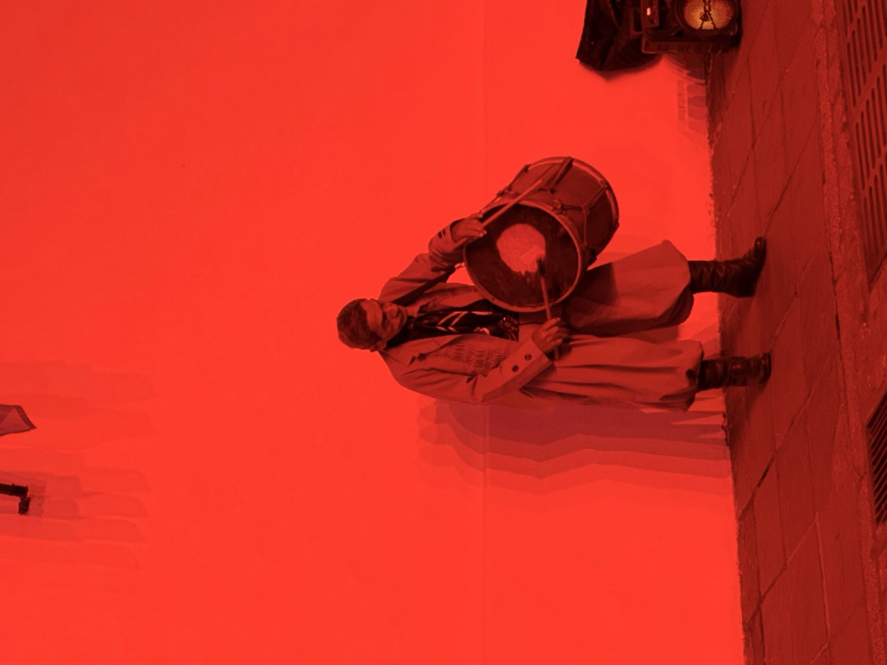


La convocatoria salió en las redes de Hacé Click y de Medios UNT. Fue una iniciativa del IMMCA junto con la UNT, el CONICET, el Ministerio de Salud Pública, la Municipalidad de San Miguel de Tucumán y el Hospital Padilla.
Frente a la Casa Histórica, pacientes, familias, profesionales de la salud e investigadores nos dimos un abrazo simbólico, con el tango de Bondi Milonguero Tucumán. El lunes siguiente, el Hospital Padilla abrió una jornada con especialistas y propuestas para mejorar la calidad de vida de quienes conviven con Parkinson.
Seguinos en @immca.lab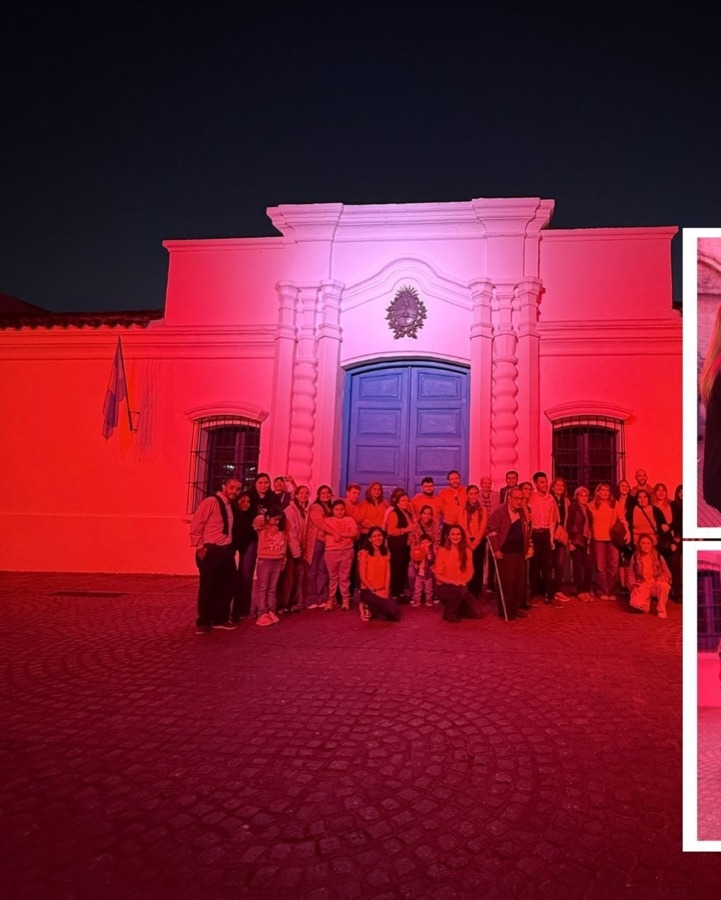
Ver en Instagram Ver en Instagram
Ver en Instagram 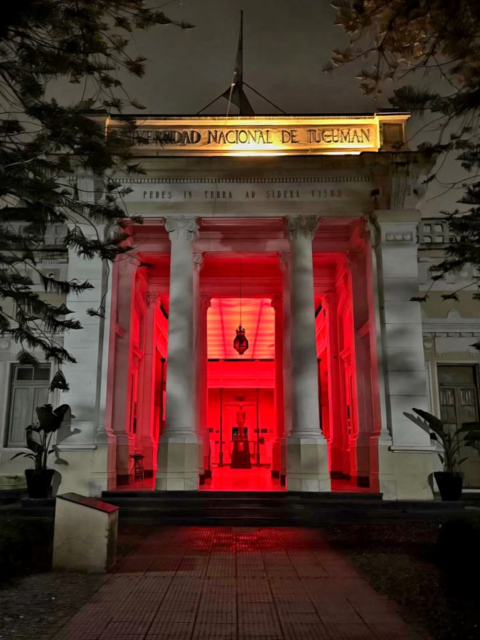
Ver en InstagramCuando el sistema de salud del que formamos parte lo necesitó, desarrollamos un test propio de anticuerpos contra el SARS-CoV-2 para medir la respuesta inmune después de la infección y de la vacuna. Se hicieron más de 5.000 determinaciones y se publicaron cuatro trabajos con estudios poblacionales en Tucumán.
Somos parte de la Red Argentina de Parkinson, con la que compartimos actividades como el Día Mundial en Tucumán.
Contamos qué se investiga y qué se sabe hoy, en lenguaje claro: desde los encuentros «Café con ALMA» en 2019 hasta el congreso de la Asociación Parkinson Neuquén en 2024.
Participamos del consorcio LARGE-PD, que estudia la genética de la enfermedad en poblaciones latinoamericanas.
Lo que se investiga en un laboratorio público se financia con el esfuerzo de toda la sociedad. Contarlo es parte del trabajo.
apariciones en medios desde 2020, en prensa local y nacional, TV, radio, redes y canales oficiales.
Fuente: archivo de prensa del IMMCA y búsqueda web, noviembre de 2026.
La cuenta más seguida entre los institutos CONICET del NOA, hecha por los propios becarios con dos publicaciones por semana.
Seguir en InstagramFormar gente también significa verla irse. Algunos de los que hicieron su tesina, su doctorado o su posdoctorado en el grupo hoy trabajan en otros laboratorios, en empresas y en el sistema de salud.
Massachusetts General Hospital Cancer Center y Harvard Medical School
Investigadora posdoctoral. Estudia el metabolismo de las células tumorales que hacen metástasis. Pew Latin American Fellow desde 2023.
Boston, Estados UnidosPuna Bio
Responsable de biología molecular en una empresa de biotecnología agrícola nacida del CONICET, que trabaja con microorganismos extremófilos de la Puna.
ArgentinaINBIONATEC, CONICET y Universidad Nacional de Santiago del Estero
Investigadora asistente del CONICET. Trabaja en fotoquímica y en terapia fotodinámica antimicrobiana.
Santiago del Estero, ArgentinaInstituto de Maternidad y Ginecología Nuestra Señora de las Mercedes, SIPROSA
Jefa del laboratorio de microbiología, que atiende a unas 3.500 personas por mes.
San Miguel de TucumánCuerpo de Investigaciones Fiscales, Ministerio Público de Salta
Trabaja en genética forense y biología molecular aplicada a la investigación judicial.
Salta, ArgentinaCERELA, CONICET
Investigadora asistente del CONICET. Estudia cómo los probióticos modulan la respuesta inmune en las alergias y busca nuevos biomarcadores. Enseña Inmunología en la FBQyF-UNT.
San Miguel de TucumánMedpace
De la investigación básica a la clínica: trabaja en una empresa internacional que gestiona ensayos clínicos para la industria farmacéutica y biotecnológica.
Madrid, EspañaUn instituto joven se construye con gente que apuesta antes de que haya resultados. Estas empresas, instituciones y asociaciones de pacientes acompañaron el trabajo del IMMCA.
Además de las autoridades de nuestras tres instituciones, queremos agradecer a quienes siempre están disponibles, sin importar la hora ni el día.
A todos les debemos un montón, así que la lista cambia de orden cada vez que se abre la página.
Colaboraciones científicas, servicios, becas o prensa: escribinos o acercate al instituto.
El repositorio institucional del CONICET reúne la producción científica del organismo para su consulta libre y gratuita.
Ir al repositorioDatos públicos del organismo: personal, becas, proyectos, producción científica y financiamiento, por instituto y por provincia.
Conocer las cifrasNuestra ficha oficial en el sistema BICyT: integrantes, líneas de trabajo, producción y proyectos acreditados.
Ver la ficha